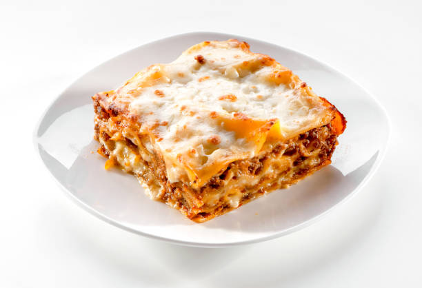

lasagna

Description
This recipe has been called the best by many and has thousands of 5-star reviews!
This is an easy lasagna recipe. It requires just one pan, one bowl, and a 9×13 baking dish.
Ingredients
- Cheese Filling: For this classic lasagna recipe, the cheese filling has ricotta and parmesan with seasonings. You can make homemade ricotta cheese or replace it with cottage cheese.
- Meat: I use both Italian sausage and ground beef for great flavor. If using all beef, add ¼ teaspoon of fennel seeds and some Italian seasoning to the meat mixture for flavor, or make my homemade Italian sausage.
- Sauce: To keep this sauce quick, I use pasta sauce or marinara sauce (it’s easy to make from scratch with crushed tomatoes and canned tomatoes if you’d prefer). If using store-bought sauce, I love Rao’s for flavor.
Steps
- Boil pasta: In a large pot of salted water boil lasagna noodles per the recipe below.
- Prepare meat sauce: Cook sausage and beef with onion and garlic. Drain well, add the pasta sauce (I love this brand) & simmer it for a few minutes to thicken.
- Combine cheese mixture: Stir the cheese mixture together in a bowl.
- Layer & bake: Layer the meat sauce and cheese mixture with lasagna noodles and bake until the top of the lasagna is golden brown.